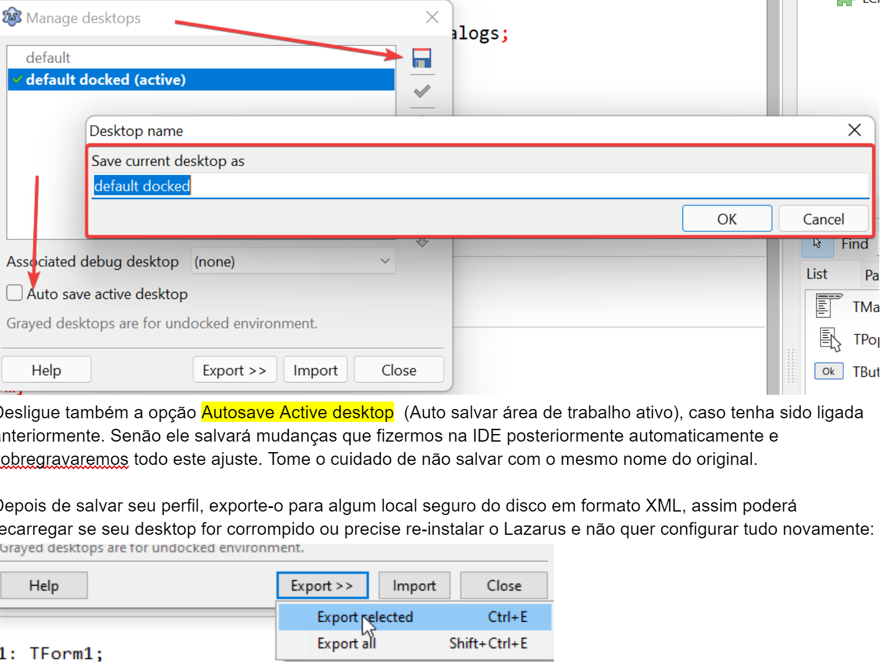
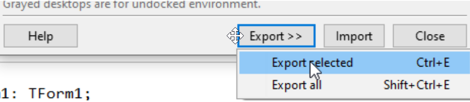

Perfís de desktop
Embora não seja obrigatório, é altamente recomendável que, a cada intervenção importante nos aspectos visuais da IDE (posição de janelas, docagem, ancoragem...), você salve sua área de trabalho (desktop). Caso contrário, se a IDE for fechada acidentalmente ou ocorrer um erro, você terá que repetir todo o processo de ajuste manual.
Ao salvar seu perfil com um nome personalizado, você garante uma "âncora" de restauração segura para o layout que você tanto trabalhou para configurar.
Como salvar seu Desktop
Com tudo organizado conforme sua preferência, acesse o menu Tools -> Desktop (Ferramentas -> Área de Trabalho). Salve sua configuração com um nome sugestivo (o Lazarus salvará em formato XML):

Dica importante: Desative a opção "Autosave Active desktop" (Auto salvar área de trabalho ativa). Se ela estiver ligada, qualquer mudança acidental que você fizer enquanto trabalha será gravada automaticamente por cima do seu ajuste perfeito.
Exportando para Segurança
Após salvar internamente, utilize a opção de exportar para gerar um arquivo XML em um local seguro (como seu Google Drive ou um pendrive). Isso permite recuperar seu ambiente rapidamente após uma reinstalação do sistema ou do Lazarus:

Estratégia de Múltiplos Perfis
O ideal é criar perfis diferentes para cenários diferentes:
- Casa: Ajustado para quem usa apenas um monitor.
- Trabalho: Configurado para aproveitar dois ou mais monitores.
- Superwide: Um layout específico para aproveitar a largura total de monitores ultrawide.
Com essa prática, você nunca mais perderá tempo reorganizando janelas e barras de ferramentas.